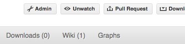

Процесс разработки#
Предполагается, что у вас уже есть собственный форк репозитория NumPy, настроен Git и подключён исходный репозиторий, как описано в разделе Подключение исходного репозитория к вашему репозиторию. Ниже описан рекомендуемый рабочий процесс с Git.
Базовый рабочий процесс #
Короче говоря:
Для каждого набора изменений создавайте новую ветку разработки. См. ниже.
Приступайте к работе! См. ниже.
Когда закончите:
Участникам: отправьте свою рабочую ветку в собственный репозиторий GitHub и создайте запрос на слияние.
Основные разработчики: если вы хотите отправить изменения без дополнительной проверки, см. примечания ниже.
Такой подход помогает упорядочить работу и сохранить максимально понятную историю изменений.
Создание новой функциональной ветви #
Сначала получите новые коммиты из репозитория upstream:
git fetch upstream
Затем создайте новую ветку от основной ветки исходного репозитория:
git checkout -b my-new-feature upstream/main
Рабочий процесс редактирования #
Обзор #
# hack hack
git status # Optional
git diff # Optional
git add modified_file
git commit
# push the branch to your own Github repo
git push origin my-new-feature
Комментарии к примеру на русском
- Работаем над кодом
- Необязательно
- Отправляем ветку в собственный репозиторий GitHub
Подробнее#
Внесите изменения. Когда связанный набор изменений будет закончен и будет работать, переходите к следующим шагам.
По желанию: проверьте, какие файлы изменились с
git status. Вы увидите такой список:# On branch my-new-feature # Changed but not updated: # (use "git add <file>..." to update what will be committed) # (use "git checkout -- <file>..." to discard changes in working directory) # # modified: README # # Untracked files: # (use "git add <file>..." to include in what will be committed) # # INSTALL no changes added to commit (use "git add" and/or "git commit -a")
Комментарии к примеру на русском
- На ветке my-new-feature
- Изменены, но не подготовлены к коммиту:
- Для подготовки к коммиту используйте git add <file>...
- Чтобы отменить изменения в рабочем каталоге, используйте git checkout -- <file>...
- Изменён: README
- Неотслеживаемые файлы:
- Чтобы включить в коммит, используйте git add <file>...
- УСТАНОВКА
Необязательно: сравните изменения с предыдущей версией с помощью
git diff. Откроется простой текстовый интерфейс просмотра, выделяющий различия между вашими файлами и предыдущей версией.Добавьте нужные изменённые или новые файлы командой
git add modified_file. Так они попадут в индекс — область подготовки следующего коммита. Добавляйте только файлы со связанными, завершёнными изменениями; незавершённые изменения оставьте для последующих коммитов.Чтобы сохранить подготовленные файлы коммитом в локальном репозитории, выполните
git commit. Откроется текстовый редактор для ввода сообщения коммита. Прочитайте раздел о сообщениях коммитов, чтобы правильно оформить сообщение и включить достаточно подробностей. После сохранения сообщения и закрытия редактора коммит будет сохранён. Для простых коммитов короткое сообщение можно передать в командной строке через флаг-m, напримерgit commit -am "ENH: Some message".Иногда используется такая форма команды фиксации изменений:
git commit -a. Дополнительный флаг-aавтоматически включает в коммит все изменённые отслеживаемые файлы и удаления файлов. Это избавляет от многочисленных вызововgit add, но при невнимательности может включить в коммит нежелательные изменения.Отправьте изменения в свой форк на GitHub:
git push origin my-new-feature
Примечание
Если вы следовали приведённым здесь инструкциям, Git создаст ссылку на ваш удалённый репозиторий GitHub под именем origin. Чтобы постоянно связать ветку с origin, используйте параметр --set-upstream:
git push --set-upstream origin my-new-feature
С этого момента git будет знать, что my-new-feature связан с веткой my-new-feature в вашем собственном репозитории GitHub. Последующие push-вызовы затем упрощаются до следующего:
git push
Вы должны использовать --set-upstream для каждой новой ветви, которую вы создаете.
Пока вы работали над изменениями, в upstream могли появиться новые коммиты, влияющие на вашу работу. В таком случае следуйте разделу Перебазирование на main, чтобы применить эти изменения к своей ветке.
Написание сообщения коммита#
Сообщения коммитов должны быть понятными и следовать нескольким основным правилам. Пример:
ENH: add functionality X to numpy.<submodule>.
The first line of the commit message starts with a capitalized acronym
(options listed below) indicating what type of commit this is. Then a blank
line, then more text if needed. Lines shouldn't be longer than 72
characters. If the commit is related to a ticket, indicate that with
"See #3456", "See ticket 3456", "Closes #3456" or similar.
В сообщение коммита также полезно включить причину изменения, описание исправляемой ошибки или подробности того, что даёт улучшение. Сообщение должно быть понятно без просмотра изменений кода. Сообщение вроде MAINT: fixed another one — пример неудачного подхода: читателю приходится искать контекст в другом месте.
Стандартные сокращения для начала сообщения коммита:
API: an (incompatible) API change
BENCH: changes to the benchmark suite
BLD: change related to building numpy
BUG: bug fix
CI: continuous integration
DEP: deprecate something, or remove a deprecated object
DEV: development tool or utility
DOC: documentation
ENH: enhancement
MAINT: maintenance commit (refactoring, typos, etc.)
MNT: alias for MAINT
NEP: NumPy enhancement proposals
REL: related to releasing numpy
REV: revert an earlier commit
STY: style fix (whitespace, PEP8)
TST: addition or modification of tests
TYP: static typing
WIP: work in progress, do not merge
Команды для пропуска непрерывной интеграции #
По умолчанию для каждого PR выполняется множество заданий непрерывной интеграции (CI): от запуска тестов на разных операционных системах и аппаратных платформах до сборки документации. Иногда заранее известно, что CI не требуется полностью или частично, например при изменении конфигурации CI, текста README или других файлов, не участвующих в обычной сборке, тестировании или подготовке документации. В таких случаях можно явно пропустить CI, включив один или несколько следующих фрагментов в сообщение каждого коммита PR:
[skip ci]: пропустите все CIРекомендуется только в том случае, если вы все еще не готовы к проверкам для запуска вашего PR (например, если это только черновик).
[skip actions]: пропустить задания GitHub ActionsВ GitHub Actions выполняется большинство проверок CI: линтер, измерения производительности, основные тесты для большинства архитектур и ОС, а также проверки с разными настройками компилятора и оптимизации под CPU. См. конфигурационные файлы этих проверок.
[skip circle]: пропустить задания CircleCIВ CircleCI мы собираем документацию и сохраняем результат для предварительного просмотра в каждом pull request. Эта проверка также выполняет все примеры из строк документации и сверяет результаты. Даже если документация не меняется, при изменении API функции может потребоваться запустить эти тесты, чтобы проверить актуальность doctest. См. файл конфигурации этих проверок.
[skip cirrus]: пропуск заданий CirrusCirrusCI преимущественно запускает загрузку пакетов wheel для Linux aarch64 и macOS Arm64. См. файл конфигурации этих проверок.
Проверка сборки wheel-пакетов#
NumPy использует cibuildwheel для сборки пакетов wheel в CI. Для экономии ресурсов такие сборки по умолчанию не запускаются для каждого pull request или коммита в main.
Чтобы проверить, что ваш pull request не нарушает сборку wheel-пакетов, добавьте [wheel build] в первую строку сообщения последнего коммита PR. Делайте это только для PR, связанных со сборкой: запуск всех сборок wheel-пакетов долгий и затратный.
Пакеты wheel, собранные через GitHub Actions (включая 64-разрядный Linux, macOS x86-64 и 32-/64-разрядную Windows), загружаются как артефакты в ZIP-файлах. Они доступны на странице Summary рабочего процесса «Wheel builder». Пакеты wheel для Linux aarch64 и macOS arm64, собранные через Cirrus CI, в виде артефактов недоступны. Кроме того, пакеты wheel загружаются на https://anaconda.org/scientific-python-nightly-wheels/ при следующих условиях:
еженедельным заданием cron или
если сборка в GitHub Actions или Cirrus запущена вручную, для чего нужны соответствующие права
Пакеты wheel будут загружены на https://anaconda.org/multibuild-wheels-staging/, если сборка запущена тегом репозитория, начинающимся с v
Узнайте мнение участников списка рассылки#
Если вы планируете новую возможность или изменение API, лучше сначала запросить мнения в списке рассылки NumPy. Если ответа нет неделю, допустимо отправить напоминание.
Запрос на включение ваших изменений в основной репозиторий#
Когда вы почувствуете, что ваша работа завершена, вы можете создать запрос на включение (PR). Если ваши изменения включают изменения в API или добавление/модификацию функции, добавьте примечание к выпуску в каталог doc/release/upcoming_changes/, следуя инструкциям и формату файла doc/release/upcoming_changes/README.rst.
Используйте в заголовке запроса на слияние те же префиксы, что и в сообщениях коммитов (например, BUG:, ENH:, DOC:). Это позволит автоматически назначать метки запросу.
Рецензирование вашего PR#
Мы рассматриваем pull request при первой возможности, обычно в течение недели. Если за две недели замечаний не поступило, можно попросить об отзыве, добавив комментарий к своему PR: сопровождающие получат уведомление.
Если PR большой или сложный, полезно также запросить мнение участников списка рассылки numpy-discussion.
Перенос ветки на main с помощью rebase#
Так в вашу рабочую ветку добавляются изменения из основного репозитория NumPy на GitHub. Старайтесь не делать этого без необходимости; возможно, это понадобится при завершении работы. Сначала нужно обновить удалённый репозиторий новыми коммитами из основного:
git fetch upstream
Далее нужно обновить ветку с разрабатываемой функциональностью:
# go to the feature branch
git checkout my-new-feature
# make a backup in case you mess up
git branch tmp my-new-feature
# rebase on upstream main branch
git rebase upstream/main
Комментарии к примеру на русском
- Переходим в ветку разработки
- Создаём резервную копию на случай ошибки
- Перебазируем на основную ветку upstream
Если изменённые вами файлы также изменились в исходном репозитории, могут возникнуть конфликты слияния, которые потребуется разрешить. Помощь см. ниже.
Наконец, после успешного rebase удалите резервную ветку:
git branch -D tmp
Примечание
Предпочтительно переносить свою ветку на main с помощью rebase, а не вливать изменения из основного репозитория в свою ветку. При работе в ветках разработки отдельных изменений не рекомендуется использовать git merge и git pull.
Восстановление после ошибок#
Иногда при слиянии или перебазировании случаются ошибки. К счастью, исправить их в Git относительно просто.
Если вы ошиблись во время перебазирования:
git rebase --abort
Если вы заметили, что что-то напутали после перебазирования:
# reset branch back to the saved point
git reset --hard tmp
Комментарии к примеру на русском
- Возвращаем ветку к сохранённой точке
Если вы забыли сделать резервную ветку:
# look at the reflog of the branch
git reflog show my-feature-branch
8630830 my-feature-branch@{0}: commit: BUG: io: close file handles immediately
278dd2a my-feature-branch@{1}: rebase finished: refs/heads/my-feature-branch onto 11ee694744f2552d
26aa21a my-feature-branch@{2}: commit: BUG: lib: make seek_gzip_factory not leak gzip obj
...
# reset the branch to where it was before the botched rebase
git reset --hard my-feature-branch@{2}
Комментарии к примеру на русском
- Смотрим reflog ветки
- Возвращаем ветку в состояние до неудачного перебазирования
Если вы на самом деле ничего не напутали, но есть конфликты слияния, вам нужно их разрешить.
Дополнительные вещи, которые вы можете сделать #
Переписывание истории коммитов#
Примечание
Делайте это только для собственных рабочих веток.
В вашем коммите оказалась досадная опечатка? Или вы сделали несколько неудачных попыток, которые не хотите оставлять в истории.
Это можно сделать с помощью интерактивной перебазировки.
Предположим, что история коммитов выглядит так:
git log --oneline
eadc391 Fix some remaining bugs
a815645 Modify it so that it works
2dec1ac Fix a few bugs + disable
13d7934 First implementation
6ad92e5 * masked is now an instance of a new object, MaskedConstant
29001ed Add pre-nep for a couple of structured_array_extensions.
...
а 6ad92e5 — последний коммит ветки main. Предположим, нужны следующие изменения:
Перепишите сообщение коммита
13d7934более осмысленно.Объедините коммиты
2dec1ac,a815645иeadc391в один.
Мы делаем следующее:
# make a backup of the current state
git branch tmp HEAD
# interactive rebase
git rebase -i 6ad92e5
Комментарии к примеру на русском
- Создаём резервную копию текущего состояния
- Интерактивное перебазирование
Это откроет редактор со следующим текстом в нем:
pick 13d7934 First implementation
pick 2dec1ac Fix a few bugs + disable
pick a815645 Modify it so that it works
pick eadc391 Fix some remaining bugs
# Rebase 6ad92e5..eadc391 onto 6ad92e5
#
# Commands:
# p, pick = use commit
# r, reword = use commit, but edit the commit message
# e, edit = use commit, but stop for amending
# s, squash = use commit, but meld into previous commit
# f, fixup = like "squash", but discard this commit's log message
#
# If you remove a line here THAT COMMIT WILL BE LOST.
# However, if you remove everything, the rebase will be aborted.
#
Комментарии к примеру на русском
- Перебазирование 6ad92e5..eadc391 на 6ad92e5
- Команды:
- p, pick — использовать коммит
- r, reword — использовать коммит, изменив сообщение
- e, edit — использовать коммит, но остановиться для внесения изменений
- s, squash — использовать коммит, объединив его с предыдущим
- f, fixup — как squash, но без сообщения этого коммита
- Если удалить строку, СООТВЕТСТВУЮЩИЙ КОММИТ БУДЕТ ПОТЕРЯН.
- Однако удаление всех строк отменит перебазирование.
Чтобы достичь желаемого, мы внесем в него следующие изменения:
r 13d7934 First implementation
pick 2dec1ac Fix a few bugs + disable
f a815645 Modify it so that it works
f eadc391 Fix some remaining bugs
Это означает, что мы хотим (i) отредактировать сообщение коммита 13d7934 и (ii) объединить три последних коммита в один. Теперь сохраним изменения и закроем редактор.
Git сразу откроет редактор сообщения коммита. После редактирования получаем вывод:
[detached HEAD 721fc64] FOO: First implementation
2 files changed, 199 insertions(+), 66 deletions(-)
[detached HEAD 0f22701] Fix a few bugs + disable
1 files changed, 79 insertions(+), 61 deletions(-)
Successfully rebased and updated refs/heads/my-feature-branch.
История теперь выглядит так:
0f22701 Fix a few bugs + disable
721fc64 ENH: Sophisticated feature
6ad92e5 * masked is now an instance of a new object, MaskedConstant
Если что-то пошло не так, восстановление возможно способом, описанным выше.
Удаление ветки на GitHub#
git checkout main
# delete branch locally
git branch -D my-unwanted-branch
# delete branch on github
git push origin --delete my-unwanted-branch
Комментарии к примеру на русском
- Удаляем локальную ветку
- Удаляем ветку на GitHub
См. также: https://stackoverflow.com/questions/2003505/how-do-i-delete-a-git-branch-locally-and-remotely
Совместная работа нескольких человек с одним репозиторием#
Если вы хотите работать совместно, записывая коммиты в один репозиторий или даже в одну ветку, просто предоставьте общий доступ через GitHub.
Сначала создайте форк NumPy в своей учётной записи, как описано в Создании собственной копии (форка) scikit-image.
Затем откройте страницу своего форка на GitHub, например https://github.com/your-user-name/numpy
Нажмите кнопку ‘Admin’ и добавьте другого участника репозитория как collaborator:

Подписи на рисунке: Pull Request — запрос на включение изменений; Unwatch — отключить наблюдение; Downloads — загрузки; Wiki — вики; Graphs — графики; Admin — администрирование. Это снимок исторического интерфейса GitHub.Теперь все эти люди могут:
git clone git@github.com:your-user-name/numpy.git
Помните: адреса, начинающиеся с git@, используют протокол SSH и позволяют читать и записывать данные; адреса, начинающиеся с git://, дают доступ только для чтения.
Затем ваши коллеги смогут внести изменения непосредственно в этот репозиторий с помощью обычного:
git commit -am 'ENH - much better code'
git push origin my-feature-branch # pushes directly into your repo
Комментарии к примеру на русском
- Отправляет изменения непосредственно в ваш репозиторий
Переключение на изменения из существующего pull request#
Если вы хотите проверить изменения из pull request или продолжить работу в новом pull request, клонируйте коммиты в локальную ветку своего форка репозитория.
Сначала убедитесь, что удалённый репозиторий upstream указывает на основной репозиторий, как описано в разделе Связывание вашего репозитория с исходным репозиторием
Затем получите изменения и создайте локальную ветку. Пусть $ID — номер запроса на включение изменений, а $BRANCHNAME — имя создаваемой новой локальной ветки:
git fetch upstream pull/$ID/head:$BRANCHNAME
Переключитесь на только что созданную ветку:
git checkout $BRANCHNAME
Теперь у вас есть изменения из запроса на слияние.
Исследуйте свой репозиторий #
Чтобы увидеть графическое представление веток и коммитов репозитория:
gitk --all
Чтобы увидеть линейный список коммитов для этой ветки:
git log
Перенос исправлений в предыдущие версии#
Обратный перенос изменений (backport) — это копирование новых возможностей или исправлений из ветки main NumPy в ветки стабильных выпусков. Для этого создайте новую ветку от той, в которую переносите изменения, выберите нужные коммиты из numpy/main с помощью cherry-pick и отправьте запрос на включение ветки с перенесёнными изменениями.
Сначала создайте рабочую ветку на основе старой версии NumPy, а не ветки main:
# Make a new branch based on numpy/maintenance/1.8.x, # backport-3324 is our new name for the branch. git checkout -b backport-3324 upstream/maintenance/1.8.x
Комментарии к примеру на русском
- Создаём ветку на основе numpy/maintenance/1.8.x;
- backport-3324 — имя новой ветки.
Теперь перенесите изменения из main в эту ветку через
git cherry-pick:# Update remote git fetch upstream # Check the commit log for commits to cherry pick git log upstream/main # This pull request included commits aa7a047 to c098283 (inclusive) # so you use the .. syntax (for a range of commits), the ^ makes the # range inclusive. git cherry-pick aa7a047^..c098283 ... # Fix any conflicts, then if needed: git cherry-pick --continue
Комментарии к примеру на русском
- Обновляем данные удалённого репозитория
- Просматриваем журнал, выбирая коммиты для cherry-pick
- Этот запрос включает коммиты от aa7a047 до c098283 включительно,
- поэтому используется синтаксис .. для диапазона коммитов; ^ делает
- начальную границу включительной.
- Разрешите конфликты, затем при необходимости:
При cherry-pick могут возникнуть конфликты. Они разрешаются так же, как конфликты слияния или перебазирования. Здесь дополнительно можно использовать
git blameдля проверки различий между main и веткой с обратным переносом, чтобы убедиться в корректности изменений.Отправьте новую ветку в свой репозиторий GitHub:
git push -u origin backport-3324
Наконец, создайте запрос на включение изменений (pull request) на GitHub. Убедитесь, что его целевая ветка — ветка сопровождения, а не main: GitHub обычно предлагает main.
Отправка изменений в основной репозиторий#
Требуются права на запись коммитов в основной репозиторий NumPy.
Когда изменения в отдельной рабочей ветке готовы к включению в ветку NumPy main или maintenance, их можно отправить в upstream следующим образом:
Сначала выполните слияние с целевой веткой или перебазируйте свою ветку на неё.
Если есть лишь несколько не связанных между собой коммитов, предпочтительнее rebase:
git fetch upstream git rebase upstream/main
Если все коммиты связаны, создайте коммит слияния:
git fetch upstream git merge --no-ff upstream/main
Проверьте, что изменения, которые вы собираетесь отправить, выглядят разумно:
git log -p upstream/main.. git log --oneline --graph
Отправить в upstream:
git push upstream my-feature-branch:main
Примечание
Обычно полезно сначала применить флаг -n команды git push, чтобы проверить, что вы отправляете нужные изменения в нужное место.